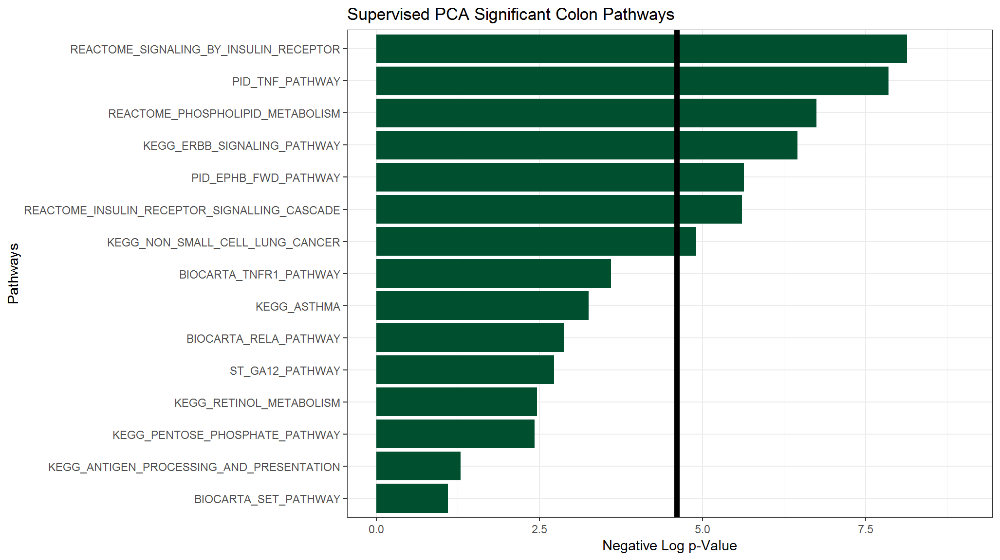

Suppl. Ch. 1 - Quickstart Guide for New R Users
Gabriel Odom
2018-12-17
Source:vignettes/Supplement1-Quickstart_Guide.Rmd
Supplement1-Quickstart_Guide.Rmd1. Overview
This guide will serve as a brief overview to the pathway significance testing workflow with the pathwayPCA package. We will discuss the four basic steps of pathway significance testing with the pathwayPCA package. These steps are: importing data, creating an Omics data object, testing pathways for significance, and inspecting the results. For detailed discussions of these steps, see the following appropriate vignettes:
- Download Packages
- Import and Tidy Data (vignette)
- Create Data Objects (vignette)
- Test Pathway Significance (vignette)
- Visualize Results (vignette)
Before we get started, you need the pathwayPCA package to run your analysis. Because we are currently in the development phase for this package, you can install the package from GitHub. In order to install a package from GitHub, you will need the devtools:: package (https://github.com/r-lib/devtools) and either Rtools (for Windows) or Xcode (for Mac). Then you can install the development version of the pathwayPCA package from GitHub:
devtools::install_github("gabrielodom/pathwayPCA")Also, if you want your analysis to be performed with parallel computing, you will need a package to help you. We recommend the parallel package (it comes with R automatically). We also recommend the tidyverse package to help you run some of the examples in these vignettes (while the tidyverse package suite is required for many of the examples in the vignettes, it is not required for any of the functions in this package).
install.packages("tidyverse")2. Import Data
This section is a quick overview of the material covered in the Import and Tidy Data vignette. Here we show how to import pathway information, assay and phenotype data, and how to join the assay and phenotype data into one data frame.
2.1 Import .gmt Files
The .gmt format is a commonly used file format for storing pathway information. Lists of pathways in the Molecular Signatures Database (MSigDB) can be downloaded from the MSigDB Collections page, and you can use the read_gmt function to import such a .gmt file into R. All .gmt files have a “description” field, which contains additional information on the pathway. However, this field can be left empty. In this example, we use description = FALSE to skip importing the “description” field.
gmt_path <- system.file("extdata", "c2.cp.v6.0.symbols.gmt",
package = "pathwayPCA", mustWork = TRUE)
cp_pathwayCollection <- read_gmt(gmt_path, description = FALSE)
cp_pathwayCollection
#> Object with Class(es) 'pathwayCollection', 'list' [package 'pathwayPCA'] with 2 elements:
#> $ pathways:List of 1329
#> $ TERMS : chr [1:1329] "KEGG_GLYCOLYSIS_GLUCONEOGENESIS" ...The imported .gmt file is stored as a pathwayCollection list object. This list contains:
- a list of the gene symbols or gene IDs contained in each pathway (
pathways), - the names of the pathways (
TERMS), and - (OPTIONAL) the description of each pathway (
description). For Canonical Pathways files, if you specifydescription = TRUE, this is the hyperlink to the pathway description card on the GSEA website.
2.2 Import and Tidy Assay Data
We assume that the assay data (e.g. transcriptomic data) is either in an Excel file or flat text file. For example, your data may look like this:

In this example data set, the columns are individual samples. The values in each row are the gene expression measurements for that gene. Use the read_csv function from the readr package to import .csv files into R as tibble (table and data frame) objects. The read_csv function prints messages to the screen informing you of the assumptions it makes when importing your data. Specifically, this message tells us that all the imported data is numeric (col_double()) except for the gene name column (X1 = col_character()).
assay_path <- system.file("extdata", "ex_assay_subset.csv",
package = "pathwayPCA", mustWork = TRUE)
assay_df <- read_csv(assay_path)
#> Warning: Missing column names filled in: 'X1' [1]
#> Parsed with column specification:
#> cols(
#> .default = col_double(),
#> X1 = col_character()
#> )
#> See spec(...) for full column specifications.Incidentally, we consider gene symbols to adhere to the following conditions:
- gene symbols must start with an English letter (a-z or A-Z), and
- gene symbols can only contain English letters, Arabic numerals (0-9), and possibly a dash (-).
Furthermore, if your data has samples in the columns and -omic feature measurements in the rows (like the data set above), you’ll need to “tidy” the imported assay with the TransposeAssay function. The transposed data set will appear similar to the following:
assayT_df <- TransposeAssay(assay_df)
assayT_df
#> # A tibble: 36 x 18
#> Sample SOAT1 LSS SQLE EBP CYP51A1 DHCR7 CYP27B1 DHCR24 HSD17B7
#> <chr> <dbl> <dbl> <dbl> <dbl> <dbl> <dbl> <dbl> <dbl> <dbl>
#> 1 T2110… 5.37 9.77 7.74 4.68 8.27 8.32 6.78 4.70 7.63
#> 2 T2110… 5.52 9.78 8.06 5.12 8.21 8.33 6.47 5.06 7.63
#> 3 T2110… 5.89 8.11 7.00 5.78 8.20 8.39 6.57 4.89 8.15
#> 4 T2110… 5.62 8.67 8.59 5.64 8.07 8.64 6.47 4.98 8.13
#> 5 T2110… 5.49 9.83 8.13 5.73 9.38 8.15 6.43 5.03 7.70
#> 6 T2110… 5.58 9.85 8.55 5.13 9.40 8.71 6.56 4.87 7.75
#> 7 T2110… 5.32 10.0 6.99 5.86 8.08 9.25 6.86 4.72 7.88
#> 8 T2110… 5.49 9.72 7.47 5.16 6.67 7.37 6.70 4.92 7.50
#> 9 T2110… 5.57 9.88 7.97 5.40 7.91 8.06 6.58 5.06 8.16
#> 10 T2110… 5.16 9.87 7.42 5.50 7.43 8.68 6.55 4.85 8.20
#> # ... with 26 more rows, and 8 more variables: MSMO1 <dbl>, FDFT1 <dbl>,
#> # SC5DL <dbl>, LIPA <dbl>, CEL <dbl>, TM7SF2 <dbl>, NSDHL <dbl>,
#> # SOAT2 <dbl>2.3 Import Phenotype Info
Use the read_csv function to import the phenotype data. Once again, the read_csv function displays a message informing us of the types of data in each column. The following phenotype dataset for subject survival information contains the subject ID (Sample), survival time after disease onset in months (eventTime), and a logical (or binary) variable indicating if the subject died (TRUE or 1) or was lost to follow up (eventObserved; 0 or FALSE).
pInfo_path <- system.file("extdata", "ex_pInfo_subset.csv",
package = "pathwayPCA", mustWork = TRUE)
pInfo_df <- read_csv(pInfo_path)
#> Parsed with column specification:
#> cols(
#> Sample = col_character(),
#> eventTime = col_double(),
#> eventObserved = col_logical()
#> )
pInfo_df
#> # A tibble: 36 x 3
#> Sample eventTime eventObserved
#> <chr> <dbl> <lgl>
#> 1 T21101311 14.2 TRUE
#> 2 T21101312 1 TRUE
#> 3 T21101313 6.75 FALSE
#> 4 T21101314 8.5 TRUE
#> 5 T21101315 7.25 FALSE
#> 6 T21101316 5 TRUE
#> 7 T21101317 20 TRUE
#> 8 T21101318 13.2 FALSE
#> 9 T21101319 7.75 FALSE
#> 10 T21101320 9 FALSE
#> # ... with 26 more rows2.4 Match the Phenotype and Assay Data
Now that you have the assay data in tidy form (assayT_df) and the phenotype data (pInfo_df), you can use the inner_join function from the dplyr package to match the assay measurements to phenotype information by subject identifier.
exSurv_df <- inner_join(pInfo_df, assayT_df, by = "Sample")
exSurv_df
#> # A tibble: 36 x 20
#> Sample eventTime eventObserved SOAT1 LSS SQLE EBP CYP51A1 DHCR7
#> <chr> <dbl> <lgl> <dbl> <dbl> <dbl> <dbl> <dbl> <dbl>
#> 1 T2110… 14.2 TRUE 5.37 9.77 7.74 4.68 8.27 8.32
#> 2 T2110… 1 TRUE 5.52 9.78 8.06 5.12 8.21 8.33
#> 3 T2110… 6.75 FALSE 5.89 8.11 7.00 5.78 8.20 8.39
#> 4 T2110… 8.5 TRUE 5.62 8.67 8.59 5.64 8.07 8.64
#> 5 T2110… 7.25 FALSE 5.49 9.83 8.13 5.73 9.38 8.15
#> 6 T2110… 5 TRUE 5.58 9.85 8.55 5.13 9.40 8.71
#> 7 T2110… 20 TRUE 5.32 10.0 6.99 5.86 8.08 9.25
#> 8 T2110… 13.2 FALSE 5.49 9.72 7.47 5.16 6.67 7.37
#> 9 T2110… 7.75 FALSE 5.57 9.88 7.97 5.40 7.91 8.06
#> 10 T2110… 9 FALSE 5.16 9.87 7.42 5.50 7.43 8.68
#> # ... with 26 more rows, and 11 more variables: CYP27B1 <dbl>,
#> # DHCR24 <dbl>, HSD17B7 <dbl>, MSMO1 <dbl>, FDFT1 <dbl>, SC5DL <dbl>,
#> # LIPA <dbl>, CEL <dbl>, TM7SF2 <dbl>, NSDHL <dbl>, SOAT2 <dbl>
3. Create an Omics Data Object
This section is a quick overview of the material covered in the Creating Data Objects vignette.
3.1 Create an Object
Using the data you just imported, create a data object specific to survival, regression, or categorical responses. For our example dataset, we will create a survival Omics object to hold our assay, pathways, and survival responses. If your indicator is a binary variable, the CreateOmics function will attempt to coerce it to a logical variable. Therefore, death indicators should be coded as 0-1, not 1-2.
This package includes a subject-matched colon cancer survival assay subset (colonSurv_df) and a toy pathway collection with 15 pathways (colon_pathwayCollection). When we create this OmicsSurv object, the pathwayPCA package checks the overlap between the -omes recorded in the assay data and the gene symbols in the supplied pathway collection. The CreateOmics() function also prints some diagnostic messages to inform you of how well your pathway collection overlaps your data.
data("colonSurv_df")
data("colon_pathwayCollection")
colon_OmicsSurv <- CreateOmics(
assayData_df = colonSurv_df[, -(2:3)],
pathwayCollection_ls = colon_pathwayCollection,
response = colonSurv_df[, 1:3],
respType = "survival"
)
#>
#> ====== Creating object of class OmicsSurv =======
#> The input pathway database included 676 unique features.
#> The input assay dataset included 656 features.
#> Only pathways with at least 3 or more features included in the assay dataset are
#> tested (specified by minPathSize parameter). There are 15 pathways which meet
#> this criterion.
#> Because pathwayPCA is a self-contained test (PMID: 17303618), only features in
#> both assay data and pathway database are considered for analysis. There are 615
#> such features shared by the input assay and pathway database.3.2 Inspect the Object
After you create an Omics object, print the object to the screen to view a summary of the data contained therein.
colon_OmicsSurv
#> Formal class 'OmicsSurv' [package "pathwayPCA"] with 6 slots
#> ..@ eventTime : num [1:250] 64.9 59.8 62.4 54.5 46.3 ...
#> ..@ eventObserved : logi [1:250] FALSE FALSE FALSE FALSE TRUE FALSE ...
#> ..@ assayData_df :Classes 'tbl_df', 'tbl' and 'data.frame': 250 obs. of 656 variables:
#> ..@ sampleIDs_char : chr [1:250] "subj1" "subj2" "subj3" "subj4" ...
#> ..@ pathwayCollection :List of 3
#> .. ..- attr(*, "class")= chr [1:2] "pathwayCollection" "list"
#> ..@ trimPathwayCollection:List of 4
#> .. ..- attr(*, "class")= chr [1:2] "pathwayCollection" "list"3.3 Detailed Object Views
Because the printing procedure for Omics objects is to show a summary of the contents, you need to use the get*() functions to view the individual components of the colon_OmicsSurv object we just created. Overall, you can use accessor functions to extract, edit, or replace data contained in the object. The accessor functions are listed in more detail in the Table of Accessors subsection of Chapter 3. Use these functions to confirm that the data object you created accurately reflects the data you intend to analyze.
3.3.1 View the Assay
getAssay(colon_OmicsSurv)
#> # A tibble: 250 x 656
#> JUN SOS2 PAK3 RAF1 PRKCB BTC SHC1 PRKCA ELK1
#> <dbl> <dbl> <dbl> <dbl> <dbl> <dbl> <dbl> <dbl> <dbl>
#> 1 -0.880 0.367 1.30 0.480 -0.867 -0.790 -2.84e-1 0.0104 1.04
#> 2 -1.11 2.15 1.62 0.165 0.547 -0.261 -4.91e-4 1.18 1.49
#> 3 -0.752 0.764 0.330 -0.541 0.164 0.452 6.91e-1 -0.950 0.667
#> 4 1.03 -0.751 2.75 -0.878 -1.09 -0.481 -1.34e+0 1.52 2.23
#> 5 -1.73 0.613 2.66 0.550 0.197 -1.02 1.56e-1 -1.29 1.68
#> 6 -0.162 0.126 -0.324 0.627 -0.106 -1.17 1.11e+0 -1.27 0.964
#> 7 -0.980 -0.520 1.28 -0.343 -0.762 -0.489 -2.57e-1 0.0518 1.21
#> 8 0.616 0.0633 0.343 -0.0195 0.578 -1.37 6.38e-1 1.37 1.05
#> 9 1.35 -0.467 -0.149 -0.718 -0.898 0.527 -6.04e-2 1.32 -1.000
#> 10 -0.538 0.413 -0.503 -1.27 -0.466 0.178 3.45e-1 -1.40 -0.378
#> # ... with 240 more rows, and 647 more variables: NRG1 <dbl>, PAK2 <dbl>,
#> # MTOR <dbl>, PAK4 <dbl>, MAP2K4 <dbl>, EIF4EBP1 <dbl>, BAD <dbl>,
#> # PRKCG <dbl>, NRG3 <dbl>, MAPK9 <dbl>, ERBB4 <dbl>, MAPK10 <dbl>,
#> # PTK2 <dbl>, ERBB2 <dbl>, ERBB3 <dbl>, MAP2K2 <dbl>, TGFA <dbl>,
#> # BRAF <dbl>, MAP2K1 <dbl>, MAP2K7 <dbl>, ABL1 <dbl>, NRG2 <dbl>,
#> # AKT1 <dbl>, ABL2 <dbl>, AKT2 <dbl>, SHC4 <dbl>, RPS6KB1 <dbl>,
#> # RPS6KB2 <dbl>, AKT3 <dbl>, NRAS <dbl>, GRB2 <dbl>, AREG <dbl>,
#> # STAT5B <dbl>, MAPK3 <dbl>, STAT5A <dbl>, PAK6 <dbl>, SOS1 <dbl>,
#> # MYC <dbl>, MAPK1 <dbl>, NCK1 <dbl>, PIK3R5 <dbl>, NRG4 <dbl>,
#> # HRAS <dbl>, MAPK8 <dbl>, EGFR <dbl>, GSK3B <dbl>, CBLB <dbl>,
#> # KRAS <dbl>, CBL <dbl>, SHC3 <dbl>, CDKN1B <dbl>, CDKN1A <dbl>,
#> # EGF <dbl>, EREG <dbl>, ARAF <dbl>, NCK2 <dbl>, SRC <dbl>,
#> # PIK3R3 <dbl>, CAMK2A <dbl>, CAMK2B <dbl>, CAMK2D <dbl>, CAMK2G <dbl>,
#> # PAK1 <dbl>, CBLC <dbl>, CRK <dbl>, PIK3CA <dbl>, PIK3CB <dbl>,
#> # CRKL <dbl>, PIK3CD <dbl>, GAB1 <dbl>, PLCG1 <dbl>, PLCG2 <dbl>,
#> # SHC2 <dbl>, HBEGF <dbl>, PIK3CG <dbl>, PIK3R1 <dbl>, PIK3R2 <dbl>,
#> # EPHB2 <dbl>, EPHB4 <dbl>, EFNA5 <dbl>, PXN <dbl>, CDC42 <dbl>,
#> # EFNB3 <dbl>, RRAS <dbl>, GRB7 <dbl>, SYNJ1 <dbl>, EPHB3 <dbl>,
#> # EFNB1 <dbl>, DNM1 <dbl>, MAP4K4 <dbl>, GRIA1 <dbl>, EPHB1 <dbl>,
#> # ROCK1 <dbl>, ITSN1 <dbl>, RAP1A <dbl>, RAC1 <dbl>, RAP1B <dbl>,
#> # EFNB2 <dbl>, WASL <dbl>, TF <dbl>, …
3.3.2 View the pathwayCollection List
getPathwayCollection(colon_OmicsSurv)
#> Object with Class(es) 'pathwayCollection', 'list' [package 'pathwayPCA'] with 3 elements:
#> $ pathways:List of 15
#> $ TERMS : Named chr [1:15] "KEGG_PENTOSE_PHOSPHATE_PATHWAY" ...
#> $ setsize : Named int [1:15] 27 64 ...3.3.3 View the Event Time
We can use the vector subsetting mechanic in R (vector[]) to view only the first ten event times.
getEventTime(colon_OmicsSurv)[1:10]
#> [1] 64.8657534 59.7698630 62.4000000 54.5095890 46.2904110 55.8575343
#> [7] 57.9616438 54.0493151 0.4273973 41.42465753.3.4 View the Event Indicator
getEvent(colon_OmicsSurv)[1:10]
#> [1] FALSE FALSE FALSE FALSE TRUE FALSE FALSE FALSE TRUE FALSE4. Test Pathways for Significance
After you have confirmed that the CreateOmics function created the Omics object you wanted, you can analyze the object with adaptive, elastic-net, sparse (AES) PCA or supervised PCA. This section is a quick overview of the material covered in the Test Pathway Significance vignette. For details of these methods functions, please see their respective sections in Chapter 4.
The function arguments are as follows. Both the AESPCA_pVals and SuperPCA_pVals functions take in an Omics object as the value to the object argument. AES-PCA can use permutation-based \(p\)-values, so the numReps argument controls how many permutations to take. If we set the number of permutations to 0, then the \(p\)-values will be calculated parametrically. The numPCs argument specifies how many principal components will be extracted from each pathway. The parallel and numCores arguments are used to control if and how the functions make use of parallel computing. Finally, the adjustment argument allows you to specify a family-wise error rate (FWER) or false discovery rate (FDR) adjustment for the pathway \(p\)-values. These options are documented in the adjustRaw_pVals function (see the help documentation for details).
4.1 AES-PCA
Perform AES-PCA pathway significance testing on the Omics object with the AESPCA_pVals function. For more details on this function, see the AES-PCA section of Chapter 4. We will adjust the pathway \(p\)-values by the estimated FDR calculated with the "BH" procedure (Benjamini and Hochberg, 1995).
colon_aespcOut <- AESPCA_pVals(
object = colon_OmicsSurv,
numReps = 0,
numPCs = 2,
parallel = TRUE,
numCores = 2,
adjustpValues = TRUE,
adjustment = "BH"
)
#> Part 1: Calculate Pathway AES-PCs
#> Initializing Computing Cluster: DONE
#> Extracting Pathway PCs in Parallel: DONE
#>
#> Part 2: Calculate Pathway p-Values
#> Initializing Computing Cluster: DONE
#> Extracting Pathway p-Values in Parallel: DONE
#>
#> Part 3: Adjusting p-Values and Sorting Pathway p-Value Data Frame
#> DONE4.2 Supervised PCA
Perform Supervised PCA pathway significance testing on the Omics object with the SuperPCA_pVals function. For more details on this function, see the Supervised PCA section of Chapter 4.
colon_superpcOut <- SuperPCA_pVals(
object = colon_OmicsSurv,
numPCs = 2,
parallel = TRUE,
numCores = 2,
adjustpValues = TRUE,
adjustment = "BH"
)
#> Initializing Computing Cluster: DONE
#> Calculating Pathway Test Statistics in Parallel: DONE
#> Calculating Pathway Critical Values in Parallel: DONE
#> Calculating Pathway p-Values: DONE
#> Adjusting p-Values and Sorting Pathway p-Value Data Frame: DONE5. Inspect Results
This section is a quick overview of the material covered in the Visualizing the Results vignette. The output of AESPCA_pVals() is list object with class aespcOut. The output of SuperPCA_pVals() is a list object with class superpcOut. Both of these objects have the following three elements:
-
pVals_df: a data frame with \(p\)-values and their details each pathway -
PCs_ls: a list of the data frames of the first selected principal component(s) extracted from the assay data subset corresponding to each pathway. -
loadings_ls: a list of the matrices of the loading vectors that correspond to the principal components inPCs_ls.
5.1 Analysis Output Table
For a quick and easy view of the pathway significance testing results, we can simply print the output data frame. If you are not using the tidyverse package suite, your results will print differently (use the head function to print the top pathways instead).
colon_superpcOut$pVals_df
#> # A tibble: 15 x 5
#> pathways n_tested terms rawp FDR_BH
#> * <chr> <int> <chr> <dbl> <dbl>
#> 1 pathway87 86 KEGG_ERBB_SIGNALING_PATHWAY 4.34e-5 6.51e-4
#> 2 pathway491 40 PID_EPHB_FWD_PATHWAY 1.61e-4 9.04e-4
#> 3 pathway757 83 REACTOME_INSULIN_RECEPTOR_SIGNAL… 1.81e-4 9.04e-4
#> 4 pathway176 54 KEGG_NON_SMALL_CELL_LUNG_CANCER 5.60e-4 2.10e-3
#> 5 pathway390 29 BIOCARTA_TNFR1_PATHWAY 4.84e-3 1.45e-2
#> 6 pathway177 26 KEGG_ASTHMA 8.64e-3 2.16e-2
#> 7 pathway413 23 ST_GA12_PATHWAY 2.09e-2 4.48e-2
#> 8 pathway3 26 KEGG_PENTOSE_PHOSPHATE_PATHWAY 3.56e-2 5.99e-2
#> 9 pathway60 45 KEGG_RETINOL_METABOLISM 3.60e-2 5.99e-2
#> 10 pathway1211 104 REACTOME_SIGNALING_BY_INSULIN_RE… 4.25e-2 6.37e-2
#> 11 pathway536 44 PID_TNF_PATHWAY 4.74e-2 6.46e-2
#> 12 pathway781 180 REACTOME_PHOSPHOLIPID_METABOLISM 6.01e-2 7.52e-2
#> 13 pathway187 16 BIOCARTA_RELA_PATHWAY 1.75e-1 2.02e-1
#> 14 pathway120 73 KEGG_ANTIGEN_PROCESSING_AND_PRES… 2.64e-1 2.83e-1
#> 15 pathway266 11 BIOCARTA_SET_PATHWAY 3.86e-1 3.86e-15.2 Graph of Top Pathways
To visualize the significance of the pathways based on FDR or uncorrected \(p\)-values, we can use the ggplot2 package to create summary graphics of the analysis results.
5.2.1 Tidy Up the Data
In order to take advantage of the publication-quality graphics created with the ggplot2 package, we first need to tidy the data frames returned by the AESPCA_pVals and SuperPCA_pVals functions. The following code takes in the \(p\)-values data frame (colon_superpcOut$pVals_df) from the Supervised PCA method, modifies it to be compatible with the ggplot function, and saves the new data frame (colonOutGather_df).
colonOutGather_df <- colon_superpcOut$pVals_df %>%
select(-pathways, -n_tested) %>%
gather(variable, value, -terms) %>%
mutate(score = -log(value)) %>%
mutate(variable = factor(variable)) %>%
mutate(variable = recode_factor(variable,
rawp = "None",
FDR_BH = "FDR"))
graphMax <- ceiling(max(colonOutGather_df$score))
colonOutGather_df
#> # A tibble: 30 x 4
#> terms variable value score
#> <chr> <fct> <dbl> <dbl>
#> 1 KEGG_ERBB_SIGNALING_PATHWAY None 0.0000434 10.0
#> 2 PID_EPHB_FWD_PATHWAY None 0.000161 8.74
#> 3 REACTOME_INSULIN_RECEPTOR_SIGNALLING_CASCADE None 0.000181 8.62
#> 4 KEGG_NON_SMALL_CELL_LUNG_CANCER None 0.000560 7.49
#> 5 BIOCARTA_TNFR1_PATHWAY None 0.00484 5.33
#> 6 KEGG_ASTHMA None 0.00864 4.75
#> 7 ST_GA12_PATHWAY None 0.0209 3.87
#> 8 KEGG_PENTOSE_PHOSPHATE_PATHWAY None 0.0356 3.34
#> 9 KEGG_RETINOL_METABOLISM None 0.0360 3.33
#> 10 REACTOME_SIGNALING_BY_INSULIN_RECEPTOR None 0.0425 3.16
#> # ... with 20 more rows5.2.2 Graph Pathway Ranks
Now that our output is tidy, we can make a bar chart of the pathway significance based on the unadjusted \(p\)-values.
raw_df <- colonOutGather_df %>%
filter(variable == "None") %>%
select(-variable, -value)
ggplot(raw_df) +
theme_bw() +
aes(x = reorder(terms, score), y = score) +
geom_bar(stat = "identity", position = "dodge", fill = "#005030") +
scale_fill_discrete(guide = FALSE) +
ggtitle("Supervised PCA Significant Colon Pathways") +
xlab("Pathways") +
scale_y_continuous("Negative Log p-Value", limits = c(0, graphMax)) +
geom_hline(yintercept = -log(0.01), size = 2) +
coord_flip()
6. Links to Detailed Information
Now that you have an idea of how to use this package, please see each of our vignettes for detailed and thorough commentary and guiding information on each of the three topics discussed herein. The vignettes are:
- Chapter 2: Import Data
- Chapter 3: Create
OmicsData Objects - Chapter 4: Test Pathway Significance
- Chapter 5: Visualizing the Results
Here is the R session information for this vignette:
sessionInfo()
#> R version 3.4.4 (2018-03-15)
#> Platform: x86_64-pc-linux-gnu (64-bit)
#> Running under: Ubuntu 18.04.1 LTS
#>
#> Matrix products: default
#> BLAS: /usr/lib/x86_64-linux-gnu/openblas/libblas.so.3
#> LAPACK: /usr/lib/x86_64-linux-gnu/libopenblasp-r0.2.20.so
#>
#> locale:
#> [1] LC_CTYPE=en_US.UTF-8 LC_NUMERIC=C
#> [3] LC_TIME=en_US.UTF-8 LC_COLLATE=en_US.UTF-8
#> [5] LC_MONETARY=en_US.UTF-8 LC_MESSAGES=en_US.UTF-8
#> [7] LC_PAPER=en_US.UTF-8 LC_NAME=C
#> [9] LC_ADDRESS=C LC_TELEPHONE=C
#> [11] LC_MEASUREMENT=en_US.UTF-8 LC_IDENTIFICATION=C
#>
#> attached base packages:
#> [1] parallel stats graphics grDevices utils datasets methods
#> [8] base
#>
#> other attached packages:
#> [1] bindrcpp_0.2.2 pathwayPCA_1.0.0.0 forcats_0.3.0
#> [4] stringr_1.3.1 dplyr_0.7.8 purrr_0.2.5
#> [7] readr_1.1.1 tidyr_0.8.2 tibble_1.4.2
#> [10] ggplot2_3.1.0.9000 tidyverse_1.2.1
#>
#> loaded via a namespace (and not attached):
#> [1] tidyselect_0.2.5 splines_3.4.4 haven_1.1.2 lattice_0.20-38
#> [5] colorspace_1.3-2 htmltools_0.3.6 yaml_2.2.0 utf8_1.1.4
#> [9] survival_2.43-1 rlang_0.3.0.1 pkgdown_1.2.0 pillar_1.3.0
#> [13] withr_2.1.2 glue_1.3.0 modelr_0.1.2 readxl_1.1.0
#> [17] bindr_0.1.1 plyr_1.8.4 munsell_0.5.0 commonmark_1.6
#> [21] gtable_0.2.0 cellranger_1.1.0 rvest_0.3.2 memoise_1.1.0
#> [25] evaluate_0.12 labeling_0.3 knitr_1.20 fansi_0.4.0
#> [29] lars_1.2 broom_0.5.0 Rcpp_1.0.0 backports_1.1.2
#> [33] scales_1.0.0 desc_1.2.0 jsonlite_1.5 fs_1.2.6
#> [37] hms_0.4.2 digest_0.6.18 stringi_1.2.4 grid_3.4.4
#> [41] rprojroot_1.3-2 cli_1.0.1 tools_3.4.4 magrittr_1.5
#> [45] lazyeval_0.2.1 crayon_1.3.4 pkgconfig_2.0.2 Matrix_1.2-14
#> [49] MASS_7.3-51.1 xml2_1.2.0 lubridate_1.7.4 assertthat_0.2.0
#> [53] rmarkdown_1.10 roxygen2_6.1.1 httr_1.3.1 rstudioapi_0.8
#> [57] R6_2.3.0 nlme_3.1-137 compiler_3.4.4